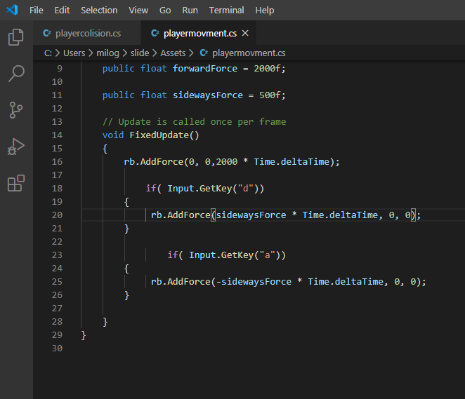
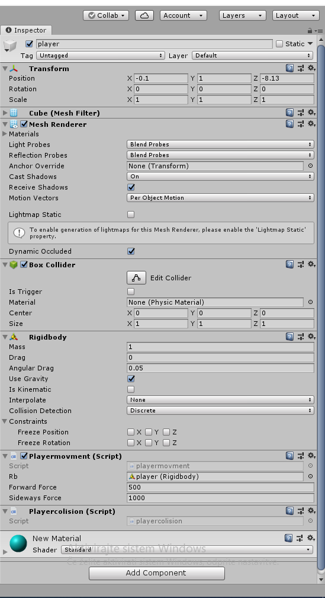

|  |
1 najprej sem naredil kocko(playerja) , potem pa še tla.
2 potem sem naredil scrip po imenu playermovment ,
in dodal da na playerja veš čas dela gravitacija naprej.
3 z if stavki sem dal da če pritisneš tipke A ali D mu doda force
v levo ali desno, da se lahko izmikaš oviram.
4 potm sem moral narediti še ovire in dati playerju in oviram box collider.
5 na koncu sem samo še kameri namesto skybox dal solid collor,
in jo dal na sivo in naredil materijale različnih baru in jih dal na ovire in kocke
|
 |